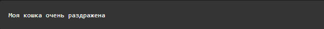
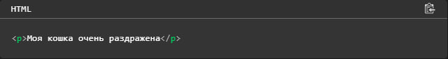
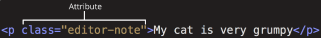
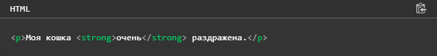
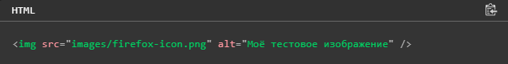

Проект ученика 10 класса
HTML
Что такое HTML на самом деле? HTML не является языком программирования; это язык разметки, и используется, чтобы сообщать вашему браузеру, как отображать веб-страницы, которые вы посещаете. Он может быть сложным или простым, в зависимости от того, как хочет веб-дизайнер. HTML состоит из ряда элементов, которые вы используете, чтобы вкладывать или оборачивать различные части контента, чтобы заставить контент отображаться или действовать определённым образом. Ограждающие теги могут сделать слово или изображение ссылкой на что-то ещё, могут сделать слова курсивом, сделать шрифт больше или меньше и так далее. Например, возьмём следующую строку контента:
Если бы мы хотели, чтобы строка стояла сама по себе, мы могли бы указать, что это абзац, заключая его в теги абзаца:
1)Открывающий тег (Opening tag): Состоит из имени элемента (в данном случае, "p"), заключённого в открывающие и закрывающие угловые скобки. Открывающий тег указывает, где элемент начинается или начинает действовать, в данном случае — где начинается абзац
2)Закрывающий тег (Closing tag): Это то же самое, что и открывающий тег, за исключением того, что он включает в себя косую черту перед именем элемента. Закрывающий элемент указывает, где элемент заканчивается, в данном случае — где заканчивается абзац. Отсутствие закрывающего тега является одной из наиболее распространённых ошибок начинающих и может приводить к странным результатам.
3)Контент (Content): Это контент элемента, который в данном случае является просто текстом.
Элемент(Element): Открывающий тег, закрывающий тег и контент вместе составляют элемент.
Элементы также могут иметь атрибуты, которые выглядят так:
Атрибуты содержат дополнительную информацию об элементе, которую вы не хотите показывать в фактическом контенте. В данном случае, class это имя атрибута, а editor-note это значение атрибута. Класс позволяет дать элементу идентификационное имя, которое может позже использоваться, чтобы обращаться к элементу с информацией о стиле и прочих вещах.
Атрибут всегда должен иметь:
1)Пробел между ним и именем элемента (или предыдущим атрибутом, если элемент уже имеет один или несколько атрибутов).
2)Имя атрибута, за которым следует знак равенства.
3)Значение атрибута, заключённое с двух сторон в кавычки.
ВЛОЖЕННЫЕ ЭЛЕМЕНТЫ
Вы также можете располагать элементы внутри других элементов — это называется вложением. Если мы хотим заявить, что наша кошка очень раздражена, мы можем заключить слово "очень" в элемент <strong> , который указывает, что слово должно быть сильно акцентированно:
Некоторые элементы не имеют контента, и называются пустыми элементами. Возьмём элемент <img>, который уже имеется в нашем HTML:
Он содержит два атрибута, но не имеет закрывающего тега </img>, и никакого внутреннего контента. Это потому, что элемент изображения не оборачивает контент для влияния на него. Его целью является вставка изображения в HTML страницу в нужном месте.
<html></html> — элемент <html>. Этот элемент оборачивает весь контент на всей странице, и иногда известен как корневой элемент.
<body></body> — элемент <body>. В нем содержится весь контент, который вы хотите показывать пользователям, когда они посещают вашу страницу, будь то текст, изображения, видео, игры, проигрываемые аудиодорожки или что-то ещё.
<title></title> — элемент <title>. Этот элемент устанавливает заголовок для вашей страницы, который является названием, появляющимся на вкладке браузера загружаемой страницы, и используется для описания страницы, когда вы добавляете её в закладки/избранное.